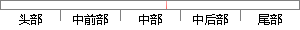

1节中对时差频差参数估计问题国内外的研究现状做了总结性的介绍。
片段位置图

相似结果|
相似片段 1：。1.3.1 节对时差频差参数估计问题国内外的研究现状做了总结性的介绍。目前为止，基于互模糊函数的时差频差估计方法仍是最有效且在工程中广泛应用的方法。但互模糊函数需要在时差频差二维空间上进行计算与搜索
相似片段 2：在 FPGA 上验证时差估计算法。 本文各章节主要内容如下： 第一章，首先，对时差估计的研究背景及意义做了概括性介绍。然后，介绍了时差估计的国内外研究现状。最后，对论文的各章节的安排情况做简要说明。 第二章
相似片段 3：。本论文的工作围绕窄带通信信号源的高精度时差估计这一课题进行，论文的研究内容安排如下：第一章主要介绍了时差参数估计及其定位技术的研究背景、意义以及国内外4第一章绪论研究现状。第二章讨论了两种最基本
|
※ 片段修改建议 ※
近似词参考：- 问题：题目
- 研究：钻研
- 现状：近况
- 介绍：先容
系统自动生成语句：1节中对时差频差参数估计题目国内外的钻研近况做了总结性的先容。
注：本片段修改建议为系统自动生成，仅供参考。